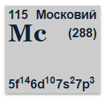
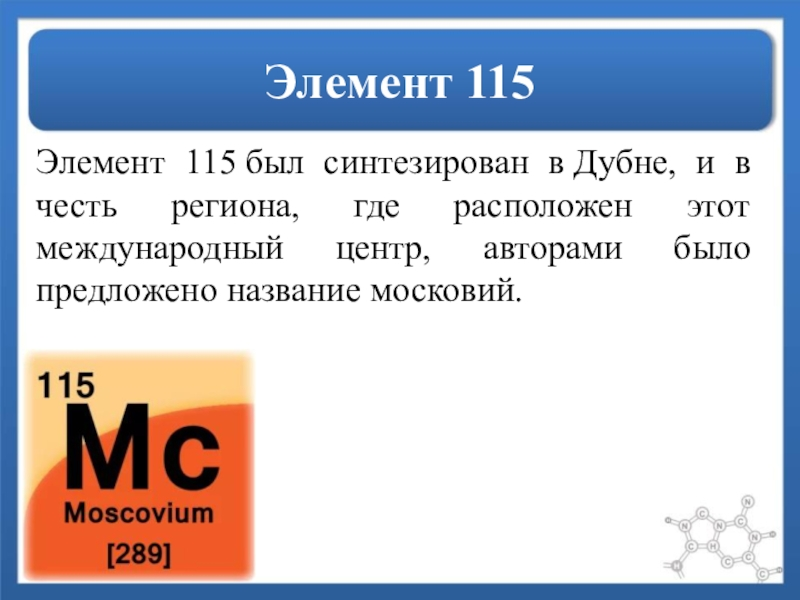

Московий(Mc)
В феврале 2004 года были опубликованы результаты экспериментов, проводившихся с 14 июля по 10 августа 2003 года, в результате которых был получен 115-й элемент[11][12]. Исследования проводились в Объединённом институте ядерных исследований (Дубна, Россия) на циклотроне У-400 c использованием дубненского газонаполненного разделителя ядер отдачи (ДГРЯО) совместно с Ливерморской национальной лаборатоии.

В отличие от более лёгких элементов, которые проявляют в той или иной степени окислительные свойства, которые ослабевают от азота к висмуту, московий химически ожидается похожим больше не на более лёгкие аналоги своей подгруппы, а на щелочные металлы, в этом плане проявляя сходство с таллием. Причина этого кроется в том, что московий в степени окисления +1 приобретёт электронную конфигурацию флеровия, которая является чрезвычайно устойчивой, а одновалентный катион Mc+ будет очень стабильным.

В весовых количествах московий не получен. Предположительно московий − непереходный металл, расчётная конфигурация внешних электронных оболочек атома 5f146d107s27p3, степень окисления +1, +3; аналог висмута.